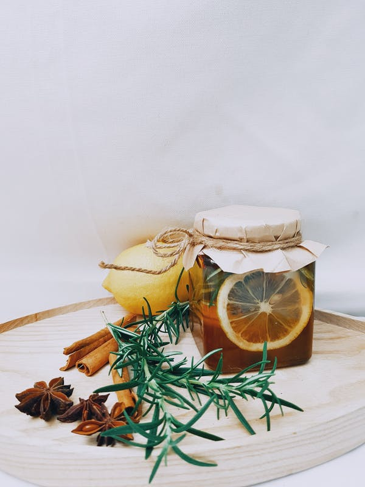

Benefits of Herbs
Plants are nature’s beautiful gift to mankind. They provide us with our basic requirements for survival, i.e. fresh air, food, clothes, shelter. Other than these there are myriads of benefits provided by plants without which it is impossible for us to survive on the earth. We get wood, medicine, paper, oils, etc. from plants for our daily needs. Plants are known as the primary producers, and all other living organisms on this planet are dependent on plants.
There are many criteria used for the classification of plants. Based on their simple morphological characters, plants are classified into herbs, shrubs and trees.
Let us discuss more about herbs and their benefits.
Explore more: Getting to Know Plants

Herb and their Benefits
What are Herbs?
They are short plants, with green and the delicate stem. Compared to other plants, these plants have very few branches and comes off easily from the soil. Grass, Mint, and wheat are a few examples of herbs.
Difference between herb and other plants
A herb is different from other woody plants. Herbaceous plants have a thin, tender and green stem, whereas woody plants have a thick woody stem.
The woody plants continue to grow all their lives while the herbs are annual, biennial or perennial and cannot withstand harsh climatic conditions.
Herbaceous plants have stems made up of cellulose, but not as rigid as lignin. Hence, they decompose relatively easily, while the woody plants possess stems made up of lignin that provides a solid, rigid structure, which prevents the stems from damage.
Read More: Types of Plants
Classification of Herbaceous Plants
Herbaceous plants are categorised into annual, biennial or perennial. They are classified based on the lifespan of the plant.
An annual herb is a herbaceous plant that completes a whole life cycle in one growing season. Annual herbaceous plants have to be seeded every year. Annuals might be summer or winter growing. Summer annuals grow well during warmer periods of the year. While winter annuals germinate in the cold seasons and survive through the winter.
Herbs are easily grown in pots, gardens or even indoors and this is a common practice. They have a lot of nutritional and health benefits. Some of the herbs have medicinal properties, which are helpful in various ailments. They are known to increase immunity, provide pain relief, enhance the digestive system and even help in anxiety. Hence, they play a huge role in our holistic well being, as they contain enough nutritional benefits, vitamins and minerals to make it a part of the diet.